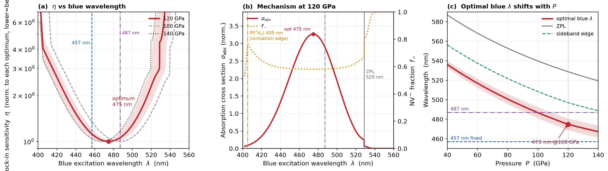

<title>475 nm at 120 GPa</title>
<style>
/* ==================================================================
   Palette is the subject: every categorical colour is the sRGB
   appearance of the laser line it labels (405 violet -> 532 green).
   The accent is 475 nm itself, the answer of the study.
   ================================================================== */
:root{
  --ground:#F1F4F6;
  --surface:#FFFFFF;
  --surface-2:#E6ECF0;
  --ink:#111A21;
  --ink-2:#3D505C;
  --muted:#6D8391;
  --rule:#CBD7DE;
  --accent:#0E86C4;      /* 475 nm */
  --accent-soft:#D6EDF9;
  --w405:#6D3AA8;
  --w457:#2159BE;
  --w473:#0E86C4;
  --w488:#0E9B92;
  --w532:#3E9B45;
  --bad:#B4432E;
  --shadow:0 1px 2px rgba(17,26,33,.06),0 8px 28px rgba(17,26,33,.07);

  --display:"Hiragino Mincho ProN","Yu Mincho","YuMincho","Noto Serif JP",
            "Iowan Old Style",Georgia,"Times New Roman",serif;
  --body:"Hiragino Kaku Gothic ProN","Yu Gothic","Noto Sans JP",
         -apple-system,BlinkMacSystemFont,"Segoe UI",system-ui,sans-serif;
  --mono:ui-monospace,SFMono-Regular,"SF Mono",Menlo,Consolas,monospace;
}
@media (prefers-color-scheme:dark){
  :root:not([data-theme="light"]){
    --ground:#0C1318;
    --surface:#131D24;
    --surface-2:#1B2830;
    --ink:#E6EEF3;
    --ink-2:#B3C6D1;
    --muted:#7E95A3;
    --rule:#26353F;
    --accent:#3FB6EF;
    --accent-soft:#12303F;
    --w405:#A279D8;
    --w457:#5E92E8;
    --w473:#3FB6EF;
    --w488:#3ACFC2;
    --w532:#63C46B;
    --bad:#E8735A;
    --shadow:0 1px 2px rgba(0,0,0,.4),0 10px 32px rgba(0,0,0,.35);
  }
}
:root[data-theme="dark"]{
  --ground:#0C1318;
  --surface:#131D24;
  --surface-2:#1B2830;
  --ink:#E6EEF3;
  --ink-2:#B3C6D1;
  --muted:#7E95A3;
  --rule:#26353F;
  --accent:#3FB6EF;
  --accent-soft:#12303F;
  --w405:#A279D8;
  --w457:#5E92E8;
  --w473:#3FB6EF;
  --w488:#3ACFC2;
  --w532:#63C46B;
  --bad:#E8735A;
  --shadow:0 1px 2px rgba(0,0,0,.4),0 10px 32px rgba(0,0,0,.35);
}

*{box-sizing:border-box;}
body{
  margin:0;background:var(--ground);color:var(--ink);
  font-family:var(--body);line-height:1.7;
  -webkit-font-smoothing:antialiased;
  scroll-snap-type:y mandatory;overflow-y:scroll;height:100vh;
}

/* ---------- slide frame ---------- */
.slide{
  scroll-snap-align:start;
  min-height:100vh;
  display:grid;
  grid-template-columns:clamp(56px,7vw,104px) 1fr;
  padding:clamp(28px,4.2vh,56px) clamp(24px,4vw,72px) clamp(28px,4.2vh,56px) 0;
  border-bottom:1px solid var(--rule);
}
.rail{
  display:flex;flex-direction:column;align-items:center;justify-content:space-between;
  border-right:1px solid var(--rule);padding:4px 0 4px;
}
.rail .num{
  font-family:var(--mono);font-size:11px;letter-spacing:.09em;
  color:var(--muted);font-variant-numeric:tabular-nums;
}
.rail .sect{
  writing-mode:vertical-rl;font-size:11px;letter-spacing:.24em;
  text-transform:uppercase;color:var(--muted);
}
.body{
  padding-left:clamp(20px,3vw,48px);
  display:flex;flex-direction:column;justify-content:center;gap:clamp(14px,2vh,26px);
  max-width:1180px;min-width:0;
}

/* ---------- type ---------- */
.eyebrow{
  font-family:var(--mono);font-size:12px;letter-spacing:.14em;
  text-transform:uppercase;color:var(--accent);margin:0;
}
h1{
  font-family:var(--display);font-weight:600;
  font-size:clamp(34px,5.4vw,68px);line-height:1.14;letter-spacing:-.015em;
  margin:0;text-wrap:balance;
}
h2{
  font-family:var(--display);font-weight:600;
  font-size:clamp(25px,3.3vw,42px);line-height:1.24;letter-spacing:-.01em;
  margin:0;text-wrap:balance;
}
h3{
  font-size:clamp(15px,1.5vw,18px);font-weight:700;margin:0;letter-spacing:.01em;
}
p{margin:0;font-size:clamp(14px,1.35vw,17px);color:var(--ink-2);max-width:70ch;}
.lede{font-size:clamp(16px,1.7vw,21px);color:var(--ink);max-width:56ch;}
strong{color:var(--ink);font-weight:700;}
.mono{font-family:var(--mono);font-variant-numeric:tabular-nums;}
.dim{color:var(--muted);}

/* ---------- components ---------- */
.cards{display:grid;grid-template-columns:repeat(auto-fit,minmax(230px,1fr));gap:clamp(12px,1.5vw,20px);}
.card{
  background:var(--surface);border:1px solid var(--rule);border-radius:3px;
  padding:clamp(16px,1.8vw,24px);display:flex;flex-direction:column;gap:9px;
  box-shadow:var(--shadow);
}
.card p{font-size:clamp(13px,1.2vw,15px);}

.stat{display:flex;flex-direction:column;gap:2px;}
.stat .v{font-family:var(--mono);font-size:clamp(26px,3.4vw,44px);line-height:1;
  font-variant-numeric:tabular-nums;letter-spacing:-.02em;}
.stat .k{font-size:12px;letter-spacing:.05em;color:var(--muted);}

.tablewrap{overflow-x:auto;}
table{border-collapse:collapse;width:100%;font-size:clamp(13px,1.25vw,16px);}
th,td{text-align:left;padding:10px 14px;border-bottom:1px solid var(--rule);vertical-align:top;}
th{font-size:12px;letter-spacing:.07em;text-transform:uppercase;color:var(--muted);font-weight:600;
  border-bottom:1px solid var(--ink-2);}
td.n{font-family:var(--mono);font-variant-numeric:tabular-nums;white-space:nowrap;}
tr.hi td{background:var(--accent-soft);}
tr.hi td:first-child{box-shadow:inset 3px 0 0 var(--accent);}

.chip{
  display:inline-flex;align-items:center;gap:6px;font-family:var(--mono);font-size:12px;
  padding:2px 9px;border-radius:2px;border:1px solid currentColor;white-space:nowrap;
}
.sw{width:8px;height:8px;border-radius:50%;background:currentColor;flex:none;}
.c405{color:var(--w405);} .c457{color:var(--w457);} .c473{color:var(--w473);}
.c488{color:var(--w488);} .c532{color:var(--w532);} .cbad{color:var(--bad);}

.split{display:grid;grid-template-columns:1fr 1fr;gap:clamp(18px,2.6vw,40px);align-items:start;}
@media (max-width:900px){.split{grid-template-columns:1fr;}}

.push{border-left:2px solid var(--accent);padding-left:clamp(14px,1.6vw,22px);}
.figbox{background:var(--surface);border:1px solid var(--rule);border-radius:3px;padding:12px;box-shadow:var(--shadow);}
.figbox img{display:block;width:100%;height:auto;}
figcaption{font-size:12.5px;color:var(--muted);margin-top:8px;}

svg{display:block;width:100%;height:auto;}
.axis{stroke:var(--rule);stroke-width:1;}
.gl{stroke:var(--rule);stroke-width:1;stroke-dasharray:2 4;}
.lbl{font-family:var(--mono);font-size:11px;fill:var(--muted);}
.lbl-i{font-family:var(--mono);font-size:11.5px;fill:var(--ink-2);}

.steps{display:flex;flex-direction:column;gap:clamp(10px,1.4vh,18px);}
.step{display:grid;grid-template-columns:auto 1fr;gap:16px;align-items:baseline;}
.step .mk{font-family:var(--mono);font-size:12px;color:var(--accent);letter-spacing:.08em;padding-top:3px;}

a{color:var(--accent);}
:focus-visible{outline:2px solid var(--accent);outline-offset:3px;}
@media (prefers-reduced-motion:reduce){*{scroll-behavior:auto !important;}}

/* ---------- print / PDF ---------- */
@media print{
  body{height:auto;overflow:visible;background:#fff;color:#000;}
  .slide{min-height:auto;page-break-after:always;border-bottom:none;padding:14mm 12mm;}
  .figbox,.card{box-shadow:none;}
}
</style>

<!-- ================================================================ 1 -->
<section class="slide">
  <div class="rail"><span class="num">01</span><span class="sect">Title</span></div>
  <div class="body">
    <p class="eyebrow">Introduction — frozen draft · 2026-08</p>
    <h1>120 GPa の ODMR は<br>475 nm で測るべきである</h1>
    <p class="lede">超高圧 DAC 中の NV センターにおける、青色励起波長の定量的最適化。
    水素化物超伝導の局所磁気イメージングを律速しているのは「ODMR が生き残るか」ではなく<strong>感度</strong>である。</p>
    <div class="cards" style="max-width:900px">
      <div class="card stat"><span class="v" style="color:var(--accent)">475 nm</span><span class="k">120 GPa での最適励起波長</span></div>
      <div class="card stat"><span class="v">×5.2</span><span class="k">532 nm を使った場合の感度劣化</span></div>
      <div class="card stat"><span class="v">×4.2</span><span class="k">405 nm を使った場合の感度劣化</span></div>
    </div>
  </div>
</section>

<!-- ================================================================ 2 -->
<section class="slide">
  <div class="rail"><span class="num">02</span><span class="sect">Driver</span></div>
  <div class="body">
    <p class="eyebrow">¶1 &nbsp;なぜ水素化物、なぜ 120 GPa</p>
    <h2>最高の <span class="mono">T</span><sub>c</sub> は最高の圧力にはない</h2>
    <div class="split">
      <div style="display:flex;flex-direction:column;gap:14px">
        <p>Ashcroft の金属水素予言(1968 / 2004)以来、記録は超高圧側で更新されてきた。
        H<sub>3</sub>S は <span class="mono">203 K</span> @ 155 GPa、LaH<sub>10</sub> は <span class="mono">250–260 K</span> @ 170 GPa。</p>
        <p class="push">だが実験の現実味があるのは<strong>もっと低い圧力帯</strong>だ。クラスレート型超水素化物 CeH<sub>9</sub> は
        <span class="mono">80–100 GPa</span> で合成され、1 Mbar 以下で <span class="mono">T<sub>c</sub> ≤ 115 K</span>。
        置換合金 (La,Ce)H<sub>9</sub> は <span class="mono">97–172 GPa</span> で <span class="mono">148–178 K</span>。</p>
        <p><strong>120 GPa は、有望な超水素化物が集中する圧力帯である。</strong>
        極限的で歩留まりの低い DAC ではなく、よく特性の分かった DAC で届く。これが狙う圧力の第一の理由。</p>
      </div>
      <div class="tablewrap">
        <table>
          <thead><tr><th>系</th><th>T<sub>c</sub></th><th>圧力</th></tr></thead>
          <tbody>
            <tr><td>H<sub>3</sub>S</td><td class="n">203 K</td><td class="n">155 GPa</td></tr>
            <tr><td>LaH<sub>10</sub></td><td class="n">250–260 K</td><td class="n">170 GPa</td></tr>
            <tr class="hi"><td>CeH<sub>9</sub></td><td class="n">≤ 115 K</td><td class="n">80–100 GPa</td></tr>
            <tr class="hi"><td>(La,Ce)H<sub>9</sub></td><td class="n">148–178 K</td><td class="n">97–172 GPa</td></tr>
          </tbody>
        </table>
        <figcaption>着色行 = 本研究が狙う圧力帯。120 GPa はこの窓のほぼ中央にある。</figcaption>
      </div>
    </div>
  </div>
</section>

<!-- ================================================================ 3 -->
<section class="slide">
  <div class="rail"><span class="num">03</span><span class="sect">Evidence</span></div>
  <div class="body">
    <p class="eyebrow">¶2 &nbsp;証拠の問題</p>
    <h2>抵抗の落下だけでは、超伝導は決着しない</h2>
    <div class="cards">
      <div class="card">
        <h3>試料が小さすぎる</h3>
        <p>120 GPa のキュレットは数十 µm、試料体積は <span class="mono">pL</span> オーダー。
        バルク磁化測定ではアンビルとガスケットの背景から分離できない。</p>
      </div>
      <div class="card">
        <h3>電気抵抗は十分条件ではない</h3>
        <p>この分野は、抵抗の落下だけでは主張が確定しないことを繰り返し経験してきた。
        必要なのは<strong>磁束排除そのもの</strong>の観測である。</p>
      </div>
      <div class="card" style="border-color:var(--accent)">
        <h3 style="color:var(--accent)">決定実験が変わった</h3>
        <p>直接・局所・空間分解された磁気測定が、確認作業ではなく<strong>決着をつける測定</strong>になった。</p>
      </div>
    </div>
    <p class="lede" style="margin-top:6px">問題は、そんな測定ができる探針が存在するのか、ということだった。</p>
  </div>
</section>

<!-- ================================================================ 4 -->
<section class="slide">
  <div class="rail"><span class="num">04</span><span class="sect">Probe</span></div>
  <div class="body">
    <p class="eyebrow">¶3 &nbsp;NV がその答えである</p>
    <h2>センサーをアンビルの<em>内側</em>に作る</h2>
    <div class="split">
      <div style="display:flex;flex-direction:column;gap:14px">
        <p>キュレット表面の数十 nm 下に注入された NV は、試料から <span class="mono">µm</span> の距離にあり、
        試料と同じ圧力を経験する。ODMR は<strong>局所磁場と局所応力テンソルを同時に</strong>読み出す。</p>
        <p class="push">最重要の応用:<strong>CeH<sub>9</sub> の Meissner 効果と磁束トラップのイメージング</strong>
        (Bhattacharyya <em>et al.</em>, Nature <strong>627</strong>, 73 (2024))。
        超伝導領域が <span class="mono">µm</span> スケールで<strong>強く不均一</strong>であることを示した。</p>
        <p class="dim">以降 LaH<sub>10</sub>、加圧下ニッケル酸塩へ展開。到達圧力は 240 GPa まで伸びている。</p>
      </div>
      <div class="steps">
        <div class="step"><span class="mk">2014</span><div><h3>NV の圧力計測学</h3><p>Doherty <em>et al.</em>, PRL 112, 047601</p></div></div>
        <div class="step"><span class="mk">2019</span><div><h3>DAC 内 NV イメージング元年</h3><p>Hsieh / Lesik / Yip, Science 366 — 応力と磁性、~30 GPa 級</p></div></div>
        <div class="step"><span class="mk">2023</span><div><h3>130 GPa</h3><p>Hilberer <em>et al.</em>, PRB 107, L220102</p></div></div>
        <div class="step"><span class="mk">2024</span><div><h3>Mbar で Meissner を撮る</h3><p>Bhattacharyya <em>et al.</em>, Nature 627, 73 — CeH<sub>9</sub></p></div></div>
        <div class="step"><span class="mk">2025</span><div><h3>240 GPa</h3><p>Hao <em>et al.</em>, arXiv:2510.26605</p></div></div>
      </div>
    </div>
  </div>
</section>

<!-- ================================================================ 5 -->
<section class="slide">
  <div class="rail"><span class="num">05</span><span class="sect">Bottleneck</span></div>
  <div class="body">
    <p class="eyebrow">¶4 &nbsp;律速は感度である</p>
    <h2>感度は指標ではない。分解能を買う通貨である</h2>
    <div class="split">
      <div style="display:flex;flex-direction:column;gap:14px">
        <p>Bhattacharyya らの結論(µm スケールの不均一性)が効いてくる。
        科学的な中身は<strong>マップ</strong>——遮蔽場のテクスチャ、トラップ磁束の幾何——と、
        その <span class="mono">T<sub>c</sub></span> 近傍・圧力に沿った発展にある。</p>
        <p>マップとは ODMR スペクトルのラスタである。したがって</p>
        <div class="card" style="align-items:center;text-align:center">
          <p class="mono" style="font-size:clamp(15px,1.8vw,22px);color:var(--ink)">
            総測定時間 &nbsp;∝&nbsp; ピクセル数 / η<sub>B</sub><sup>2</sup></p>
        </div>
        <p>1 回の loading に数週間、アンビル 1 枚の破壊で全損する。
        この状況では感度は figure of merit ではなく、<strong>空間分解能・視野・(P, T) 点数のすべてを買う通貨</strong>である。</p>
      </div>
      <div style="display:flex;flex-direction:column;gap:14px">
        <div class="card" style="border-color:var(--accent)">
          <h3>問いが移動した</h3>
          <p>「高圧で ODMR は生き残るか」は決着済み<span class="dim">(Ho <em>et al.</em> 2026、Huang <em>et al.</em> 2025)</span>。
          残る問いは <strong>どうすれば最も感度良くできるか</strong> である。</p>
        </div>
        <div class="card">
          <h3>感度 ×2 の意味</h3>
          <p>同じマップを <span class="mono">1/4</span> の時間で撮れる。あるいは同じ時間で <span class="mono">4×</span> のピクセルを撮れる。
          本研究が示す ×5 は、測定時間にして <span class="mono">×25</span> に相当する。</p>
        </div>
      </div>
    </div>
  </div>
</section>

<!-- ================================================================ 6 -->
<section class="slide">
  <div class="rail"><span class="num">06</span><span class="sect">Shifts</span></div>
  <div class="body">
    <p class="eyebrow">¶5 &nbsp;120 GPa の NV は光学的に別物である</p>
    <h2>3 つのシフトが、常圧の慣習を壊す</h2>
    <div class="tablewrap">
      <table>
        <thead><tr><th style="width:26%">現象</th><th style="width:30%">常圧 → 120 GPa</th><th>帰結</th></tr></thead>
        <tbody>
          <tr>
            <td><strong>ZPL 青方シフト</strong></td>
            <td class="n">1.945 → 2.345 eV<br><span class="dim">(637 → 529 nm)</span></td>
            <td><span class="chip c532"><span class="sw"></span>532 nm</span> が吸収端の真上に落ちる。
              σ<sub>abs</sub> は常圧グリーンの <strong>4%</strong> に崩壊。青励起は好みではなく<strong>必然</strong>。</td>
          </tr>
          <tr>
            <td><strong>電子–格子結合の強化</strong></td>
            <td class="n">S<sub>abs</sub> 3.08 → 4.61<br>DWF 2.2% → 0.36%</td>
            <td>吸収帯が広がり、重心が高エネルギー側へ動く。Franck–Condon 包絡の極大は <span class="mono">475 nm</span> へ。</td>
          </tr>
          <tr>
            <td><strong>光イオン化閾値の上昇</strong></td>
            <td class="n">IP(³A₂) 2.68 → 3.06 eV<br>IP(³E) 1.16 → 1.63 eV</td>
            <td><span class="mono">3.06 eV = 405.2 nm</span>。標準の
              <span class="chip c405"><span class="sw"></span>405 nm</span> 線が
              <strong>基底状態イオン化端にちょうど一致する</strong>。
              これより青は NV⁻ を直接 NV⁰ に叩き落とす。<strong>使えるスペクトルの縁</strong>である。</td>
          </tr>
        </tbody>
      </table>
    </div>
    <p class="dim">すべて Ho <em>et al.</em>, arXiv:2606.02399 (2026) が第一原理計算と実験で定量化した値。本研究の光学入力はここに固定してある。</p>
  </div>
</section>

<!-- ================================================================ 7 -->
<section class="slide">
  <div class="rail"><span class="num">07</span><span class="sect">Tension</span></div>
  <div class="body">
    <p class="eyebrow">¶6 &nbsp;3 つは同じ方向に働かない</p>
    <h2>青くすると明るくなり、同時に消える</h2>
    <div class="split" style="grid-template-columns:1.05fr 1fr">
      <div style="display:flex;flex-direction:column;gap:12px">
        <div class="card"><h3 style="color:var(--accent)">青くする → 得</h3>
          <p>移動した吸収帯を追える。光子レート <span class="mono">R</span> が上がる。</p></div>
        <div class="card"><h3 style="color:var(--bad)">青くする → 損</h3>
          <p>イオン化端に近づく。定常 NV⁻ 分率 <span class="mono">f₋</span> が落ち、
          偏極していない NV⁰ 蛍光がコントラスト <span class="mono">C</span> を希釈する。</p></div>
        <div class="push">
          <p class="mono" style="font-size:clamp(16px,2vw,24px);color:var(--ink)">η ∝ Δν / (C·√R)</p>
          <p><strong>コントラストには線形、光子レートには平方根でしか効かない。</strong>
          どちらが勝つかは定量的な問いであり、吸収スペクトルを眺めても決まらない。</p>
        </div>
        <div class="card" style="border-color:var(--accent)">
          <h3 style="color:var(--accent)">モデルの答え:固定パワーでは打ち消し合う</h3>
          <p>イオン化端より赤側では <span class="mono">G<sub>ion</sub></span> の ReLU 項が消え、
          残る ³E 経由イオン化 <span class="mono">a<sub>es</sub>σ</span> と再結合 <span class="mono">r₀σ</span> が
          <strong>同じ σ に比例する</strong>。σ は f₋ から落ちる。実際 f₋ は 463–486 nm で
          <span class="mono">0.5806→0.5816</span> と平坦。
          <strong>だから固定パワーの最適は吸収極大そのもの</strong>になる。
          <span class="dim">これは検証可能な予言である ── 校正とパワー依存でこの打ち消しが崩れるかを見る。</span></p>
        </div>
      </div>
      <div>
        <!-- data-derived figure: computed from code/nv_model.py at 120 GPa -->
        <svg viewBox="0 0 900 360" role="img"
             aria-label="120 GPa における η(λ) の谷と、その下に σ_abs と f₋ を重ねた図">
          <!-- panel A: eta -->
          <text class="lbl-i" x="0" y="12">η(λ) / η_opt &nbsp;(下ほど良い)</text>
          <g transform="translate(0,170) scale(1,-1)">
            <polyline fill="none" stroke="var(--accent)" stroke-width="2.5"
              points="17.1,104.0 22.8,99.2 45.6,90.6 68.4,82.1 91.1,73.6 113.9,65.1 136.7,56.7 159.5,48.6 182.3,40.9 205.1,33.6 227.8,27.0 250.6,21.0 273.4,15.6 296.2,11.1 319.0,7.3 341.8,4.2 364.6,2.0 387.3,0.6 404.4,0.1 415.8,0.0 427.2,0.1 438.6,0.5 450.0,1.0 461.4,1.8 472.8,2.9 484.2,4.1 495.6,5.6 507.0,7.3 518.4,9.2 529.7,11.4 541.1,13.8 552.5,16.5 563.9,19.5 575.3,22.6 586.7,26.1 598.1,29.8 609.5,33.8 620.9,38.1 632.3,42.6 643.7,47.3 655.1,52.3 666.5,57.6 677.8,62.8 689.2,67.8 700.6,71.9 712.0,75.4 717.7,77.4 723.4,108.0 734.8,112.9 746.2,126.2 757.6,150.0"/>
          </g>
          <line class="axis" x1="0" y1="170" x2="900" y2="170"/>
          <!-- laser line markers -->
          <g>
            <line class="gl" x1="17.1" y1="18" x2="17.1" y2="170" stroke="var(--w405)"/>
            <text class="lbl" x="21" y="30" fill="var(--w405)">405</text>
            <line class="gl" x1="313.3" y1="60" x2="313.3" y2="170" stroke="var(--w457)"/>
            <text class="lbl" x="317" y="72" fill="var(--w457)">457</text>
            <line x1="415.8" y1="20" x2="415.8" y2="170" stroke="var(--accent)" stroke-width="1.5"/>
            <text class="lbl" x="420" y="32" fill="var(--accent)" style="font-weight:700">475 = 最適</text>
            <line class="gl" x1="740.5" y1="18" x2="740.5" y2="170" stroke="var(--w532)"/>
            <text class="lbl" x="700" y="30" fill="var(--w532)" text-anchor="end">532</text>
          </g>
          <!-- panel B: sigma & f- -->
          <text class="lbl-i" x="0" y="205">σ_abs (面) &nbsp;/&nbsp; f₋ (破線)</text>
          <g transform="translate(0,215)">
            <polygon fill="var(--accent)" fill-opacity="0.16" stroke="none"
              points="0,150 17.1,146.4 45.6,143.9 91.1,137.3 136.7,126.2 182.3,109.4 227.8,87.2 273.4,61.7 319.0,36.8 364.6,18.0 404.4,10.3 415.8,10.0 450.0,14.2 495.6,31.0 541.1,56.8 586.7,85.6 632.3,111.6 677.8,130.9 717.7,139.1 723.4,147.3 763.3,149.7 810,150 900,150"/>
            <polyline fill="none" stroke="var(--accent)" stroke-width="2"
              points="0,150 17.1,146.4 45.6,143.9 91.1,137.3 136.7,126.2 182.3,109.4 227.8,87.2 273.4,61.7 319.0,36.8 364.6,18.0 404.4,10.3 415.8,10.0 450.0,14.2 495.6,31.0 541.1,56.8 586.7,85.6 632.3,111.6 677.8,130.9 717.7,139.1 723.4,147.3 763.3,149.7 810,150 900,150"/>
            <polyline fill="none" stroke="var(--ink-2)" stroke-width="1.6" stroke-dasharray="5 4"
              points="17.1,45.2 45.6,49.9 91.1,58.3 136.7,63.2 182.3,65.8 227.8,67.2 273.4,68.0 319.0,68.4 364.6,68.6 415.8,68.7 461.4,68.6 507.0,68.4 552.5,67.9 598.1,67.0 643.7,64.9 689.2,60.3 717.7,56.8 723.4,38.0 746.2,27.2 769.0,12.8 800,10.2 900,10.0"/>
            <line class="axis" x1="0" y1="150" x2="900" y2="150"/>
            <line class="gl" x1="17.1" y1="0" x2="17.1" y2="150" stroke="var(--w405)"/>
            <text class="lbl" x="21" y="60" fill="var(--w405)">IP(³A₂) 端</text>
            <line class="gl" x1="723.4" y1="0" x2="723.4" y2="150" stroke="var(--muted)"/>
            <text class="lbl" x="719" y="120" fill="var(--muted)" text-anchor="end">ZPL 529</text>
            <line x1="415.8" y1="0" x2="415.8" y2="150" stroke="var(--accent)" stroke-width="1.5"/>
          </g>
          <text class="lbl" x="0" y="382">400</text>
          <text class="lbl" x="450" y="382" text-anchor="middle">480 nm</text>
          <text class="lbl" x="900" y="382" text-anchor="end">560</text>
        </svg>
        <figcaption>120 GPa。η の谷(上)は σ<sub>abs</sub> の極大(下)と<strong>一致する</strong>。
        f₋(破線)は青色窓の全域でほぼ平坦 ── イオン化と再結合が σ で打ち消し合うため。
        405 nm と 532 nm はどちらも σ が崩壊した位置にあり、それが ×4 / ×5 の劣化の正体である。</figcaption>
      </div>
    </div>
  </div>
</section>

<!-- ================================================================ 8 -->
<section class="slide">
  <div class="rail"><span class="num">08</span><span class="sect">Gap</span></div>
  <div class="body">
    <p class="eyebrow">¶6→¶7 &nbsp;ギャップ</p>
    <h2>ガイドラインはある。数字がない</h2>
    <div class="split">
      <div class="card">
        <h3 class="dim">既にあるもの</h3>
        <p style="font-size:clamp(15px,1.6vw,19px);color:var(--ink)">
        「励起波長は ZPL のシフトを追って調整せよ」</p>
        <p class="dim">— Ho <em>et al.</em> 2026 の spectroscopic guidelines(定性的)</p>
      </div>
      <div class="card" style="border-color:var(--accent)">
        <h3 style="color:var(--accent)">実験者が実際に必要とするもの</h3>
        <div class="steps" style="margin-top:4px">
          <div class="step"><span class="mk">Q1</span><div><p style="color:var(--ink)">では、<strong>何 nm</strong> なのか。</p></div></div>
          <div class="step"><span class="mk">Q2</span><div><p style="color:var(--ink)">許容幅は。<strong>市販レーザー線</strong>で足りるのか。</p></div></div>
          <div class="step"><span class="mk">Q3</span><div><p style="color:var(--ink)">最適波長は<strong>レーザーパワーで変わる</strong>のか。<br>
            <span class="dim">DAC ではキュレットが小さく試料は金属で吸収する。使えるパワーはレーザーではなく発熱で決まる。</span></p></div></div>
        </div>
      </div>
    </div>
    <p class="lede">レーザーを発注する段階で答えが要る。<strong>本研究はこの 3 つに数値で答える。</strong></p>
  </div>
</section>

<!-- ================================================================ 9 -->
<section class="slide">
  <div class="rail"><span class="num">09</span><span class="sect">Model</span></div>
  <div class="body">
    <p class="eyebrow">Model &nbsp;— 何を固定し、何を自由にしたか</p>
    <h2>光学入力は文献に釘付け、電荷レートだけ現象論</h2>
    <div class="split">
      <div class="card" style="border-color:var(--accent)">
        <h3 style="color:var(--accent)">アンカー(自由度なし)</h3>
        <p>Ho <em>et al.</em> 2026 から取る:ZPL(P)、S<sub>abs</sub>(P)、DWF(P)、IP(³A₂)(P)、IP(³E)(P)、
        有効フォノン energy 65 meV。σ<sub>abs</sub> は低温 Franck–Condon(Pekarian)包絡。</p>
      </div>
      <div class="card">
        <h3>現象論ノブ(校正対象)</h3>
        <p><span class="mono">a<sub>gs</sub></span>(1 光子イオン化)、<span class="mono">a<sub>es</sub></span>(³E 経由)、
        <span class="mono">r₀</span>、<span class="mono">r<sub>bg</sub></span>(再結合)、
        <span class="mono">w₀</span>(NV⁰ 背景の明るさ)。すべて Monte Carlo で不確かさを伝播。</p>
      </div>
    </div>
    <div class="tablewrap" style="max-width:820px">
      <table>
        <tbody>
          <tr><td class="n">η ∝ Δν / (C√R)</td><td>ロックイン CW-ODMR 感度(小さいほど良い)</td></tr>
          <tr><td class="n">C = C₀ · f₋/(f₋ + w₀(1−f₋))</td><td>NV⁰ 蛍光で希釈されたコントラスト</td></tr>
          <tr><td class="n">R ∝ f₋ · σ<sub>abs</sub></td><td>検出光子レート(固定パワー)</td></tr>
          <tr><td class="n">f₋ = G<sub>rec</sub>/(G<sub>rec</sub>+G<sub>ion</sub>)</td><td>定常 NV⁻ 分率</td></tr>
          <tr class="hi"><td class="n">G<sub>ion</sub> = a<sub>gs</sub>[E<sub>γ</sub>−IP(³A₂)]₊ + a<sub>es</sub>σ<sub>abs</sub></td>
            <td><strong>第 1 項が 405 nm を殺す項。</strong>閾値より上でのみ立ち上がる</td></tr>
        </tbody>
      </table>
    </div>
    <p class="dim">相対量 η(λ)/η(λ<sub>opt</sub>) のみ主張する。絶対感度(nT/√Hz)は校正(Part C)後にしか出せない。</p>
  </div>
</section>

<!-- ================================================================ 10 -->
<section class="slide">
  <div class="rail"><span class="num">10</span><span class="sect">Answer</span></div>
  <div class="body">
    <p class="eyebrow">Result — 問1 の答え</p>
    <h2>λ<sub>opt</sub> = 475 nm。市販の 473 nm でよい</h2>
    <div class="split" style="grid-template-columns:1fr 1.15fr">
      <div class="tablewrap">
        <table>
          <thead><tr><th>レーザー線</th><th>η/η<sub>opt</sub></th><th>判定</th></tr></thead>
          <tbody>
            <tr><td><span class="chip c405"><span class="sw"></span>405 nm</span></td><td class="n">4.23</td><td>吸収帯の青い裾。この先はイオン化端</td></tr>
            <tr><td><span class="chip c457"><span class="sw"></span>457 nm</span></td><td class="n">1.12</td><td>10% 帯の内側</td></tr>
            <tr class="hi"><td><span class="chip c473"><span class="sw"></span>473 nm</span></td><td class="n">1.001</td><td><strong>運用上の最適解</strong></td></tr>
            <tr class="hi"><td><span class="chip c473"><span class="sw"></span>475 nm</span></td><td class="n">1.000</td><td>モデル最適</td></tr>
            <tr><td><span class="chip c488"><span class="sw"></span>488 nm</span></td><td class="n">1.07</td><td>10% 帯の内側</td></tr>
            <tr><td><span class="chip c532"><span class="sw"></span>532 nm</span></td><td class="n">5.16</td><td>吸収端の上。使ってはいけない</td></tr>
          </tbody>
        </table>
        <figcaption>許容帯:<span class="mono">5%</span> で 463–486 nm、<span class="mono">10%</span> で 458–491 nm。
        市販 473 nm DPSS 線は最適から 2 nm、コストは <span class="mono">0.1%</span>。<strong>特注光源は不要。</strong></figcaption>
      </div>
      <div style="display:flex;flex-direction:column;gap:14px">
        <div class="card" style="border-color:var(--accent)">
          <h3 style="color:var(--accent)">最適 = 吸収極大(これ自体が結果)</h3>
          <p>固定パワーでは λ<sub>opt</sub> が Franck–Condon 包絡の極大と一致する。
          自明ではなく、<strong>イオン化と再結合が σ に比例して打ち消し合う</strong>ことの帰結。
          <span class="dim">a<sub>gs</sub>=0 にしても λ<sub>opt</sub> は動かない ── イオン化は最適を「ずらす」のではなく、青側を「禁止する」形で効く。</span></p>
        </div>
        <div class="card">
          <h3>λ<sub>opt</sub> は圧力ごとに選び直す</h3>
          <p>ZPL を追って <span class="mono">0.6–0.7 nm/GPa</span> で動く。
          100 GPa では 487 nm、120 GPa では 475 nm。
          (La,Ce)H<sub>9</sub> の 97–172 GPa 窓を横断すると、<strong>10% 許容帯を超える</strong>。</p>
        </div>
        <div class="card" style="background:var(--accent-soft);border-color:var(--accent)">
          <h3>実務上の帰結</h3>
          <p>473 nm 光源へ換えるだけで、グリーン励起に対して感度 <span class="mono">×5</span>
          = 磁気マップ 1 枚の取得時間 <span class="mono">×1/25</span>。</p>
        </div>
      </div>
    </div>
  </div>
</section>

<!-- ================================================================ 11 -->
<section class="slide">
  <div class="rail"><span class="num">11</span><span class="sect">Figure</span></div>
  <div class="body">
    <p class="eyebrow">Figure 1 &nbsp;— code/fig2_blue_wavelength_sweep.py</p>
    <h2>谷・機構・圧力追従</h2>
    <div class="figbox">
      
    </div>
    <figcaption><strong>(a)</strong> η(λ)(各圧力の最適値で規格化)と Monte Carlo 16–84% 帯。
    <strong>(b)</strong> 機構:σ<sub>abs</sub> と f₋、ZPL とイオン化端の位置。
    <strong>(c)</strong> 最適青色波長の圧力依存 — ZPL とサイドバンド端を追う。</figcaption>
  </div>
</section>

<!-- ================================================================ 12 -->
<section class="slide">
  <div class="rail"><span class="num">12</span><span class="sect">Open</span></div>
  <div class="body">
    <p class="eyebrow">Next — 未確定のまま残していること</p>
    <h2>凍結したのは Introduction だけである</h2>
    <div class="cards">
      <div class="card">
        <h3>Part B — パワー依存(未決着)</h3>
        <p>2 光子イオン化・飽和・パワー広がりを入れた power-explicit モデルは、現状
        u が上がると λ<sub>opt</sub> が <span class="mono">405 nm</span> まで青へ走り、Part A と整合しない。
        <strong>2 光子項と飽和スケールの設定を見直す必要がある。</strong>
        Introduction では答えを書かず、<em>問いとしてのみ</em>提示してある。</p>
      </div>
      <div class="card">
        <h3>Part C — 校正</h3>
        <p>予定の (I<sub>405</sub>, I<sub>457</sub>) 2 ビーム強度掃引で
        {a<sub>gs</sub>, a<sub>es</sub>, r₀, r<sub>bg</sub>, w₀} を決める。
        測定前に profile likelihood で<strong>識別可能性</strong>を確認すること —
        2 光子係数と飽和が分離できない可能性がある。</p>
      </div>
      <div class="card">
        <h3>投稿先</h3>
        <p>PRA で書き始めたが、内容は装置設計に直結しており
        <strong>PR Applied</strong> の方が自然かもしれない。REVTeX のクラスオプション変更のみで済む。</p>
      </div>
    </div>
    <div class="push" style="margin-top:6px">
      <p class="lede">意図的にやらなかったこと:撤回論文の名指し、NV の基礎解説、絶対感度(nT/√Hz)の主張、
      「120 GPa で世界初」という位置取り。<span class="dim">新規性は圧力記録ではなく感度最適化の定量化にある。</span></p>
    </div>
  </div>
</section>

<script>
(function(){
  var slides = Array.prototype.slice.call(document.querySelectorAll('.slide'));
  function current(){
    var best = 0, bd = Infinity;
    slides.forEach(function(s,i){
      var d = Math.abs(s.getBoundingClientRect().top);
      if (d < bd){ bd = d; best = i; }
    });
    return best;
  }
  function go(i){
    i = Math.max(0, Math.min(slides.length-1, i));
    slides[i].scrollIntoView({behavior:'smooth', block:'start'});
  }
  document.addEventListener('keydown', function(e){
    if (e.metaKey || e.ctrlKey || e.altKey) return;
    var k = e.key;
    if (k === 'ArrowDown' || k === 'ArrowRight' || k === 'PageDown' || k === ' '){
      e.preventDefault(); go(current()+1);
    } else if (k === 'ArrowUp' || k === 'ArrowLeft' || k === 'PageUp'){
      e.preventDefault(); go(current()-1);
    } else if (k === 'Home'){ e.preventDefault(); go(0); }
    else if (k === 'End'){ e.preventDefault(); go(slides.length-1); }
  });
})();
</script>
